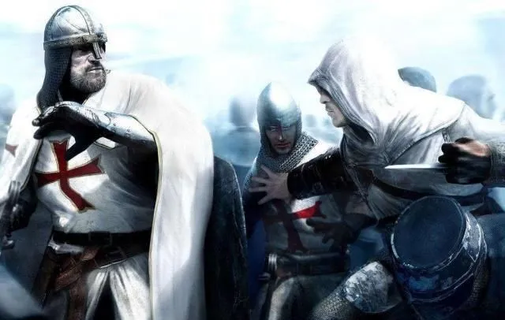
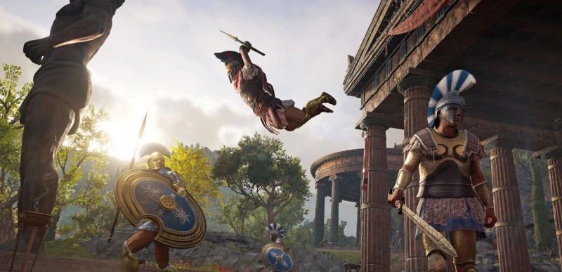
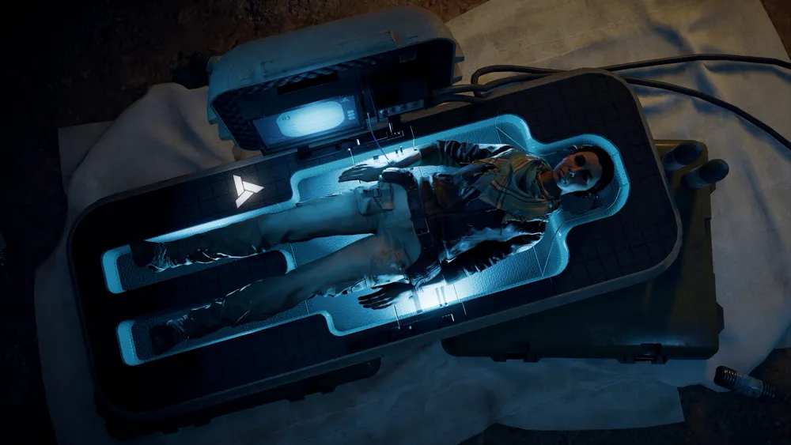

暗示和隐喻的使用：刺客信条系列的游戏世界中使用了很多暗示和隐喻。例如，刺客和圣殿骑士的斗争暗示了宗教、权力和自由的争斗，以及现代社会中的一些问题。这些暗示和隐喻让游戏更加深入，也让玩家在游戏中得到了更多的启示和思考。

神话传说的应用：刺客信条系列的游戏世界还应用了一些神话和传说，例如《刺客信条：奥德赛》中的希腊神话和《刺客信条：英灵殿》中的北欧神话。这些神话和传说为游戏增添了更多的神秘感和想象空间。

科技元素的加入：刺客信条系列的游戏世界还加入了一些科技元素，例如《刺客信条》中的“Animus”和《刺客信条3》中的“Animus 3.0”。这些科技元素不仅让游戏更加有趣，也让玩家在游戏中可以体验到未来科技的发展。